How to update the numbers on the DASE Hub dashboard, add new metrics, and control what's shown — written for Helen and Michael.
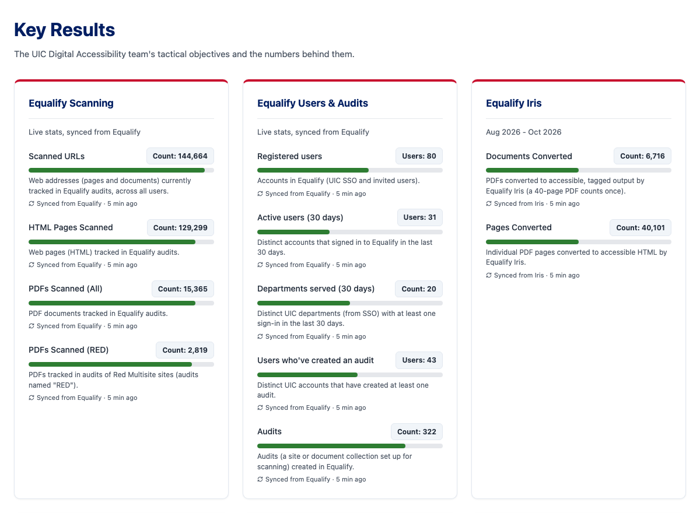
The dashboard lives at dase.uic.edu/key-results. Two pages control it, both opened with the DASE team passcode:
| I want to… | Go to | What to do |
|---|---|---|
| Update a number | dase.uic.edu/submit-stats | Pick the metric → Update → type the new number → Save Update |
| Explain what a number counts | Submit Stats → Update | Fill in What this counts; it appears under the metric |
| Set a goal for a metric | Submit Stats → Update | Type the goal in Goal; the green bar and a "Goal: … · % there" line follow automatically |
| Change the unit or wording around a number (e.g. Hours → Sessions) | Submit Stats → Update | Open Change the wording around the number, edit the text before/after it, save |
| Rename a KPI | Submit Stats → Update (or Rename / goal on auto-synced rows) | Change Metric name and save |
| Add a new metric to a category | Submit Stats → + Add a metric | Name, value (e.g. "Total: 47 People"), optional goal, your name |
| Show or hide a metric or category | dase.uic.edu/admin → Dashboard layout | Tick or untick the checkbox |
| Reorder categories | Admin → ▲ ▼ buttons | Moves the card up or down the dashboard |
| Add a category (with its date range) | Admin → Add Objective | Title + date range, then add metrics on Submit Stats |
| Rename a category or change its date range | Admin → Edit name & dates | Under the category, change the title or date range and press Save |
| Refresh the Equalify / Iris numbers | Admin → Sync Now | Otherwise they refresh on their own every 6 hours |
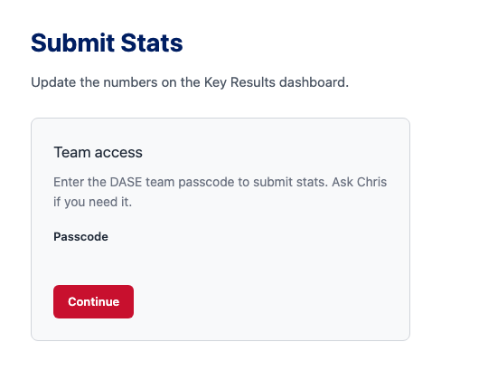
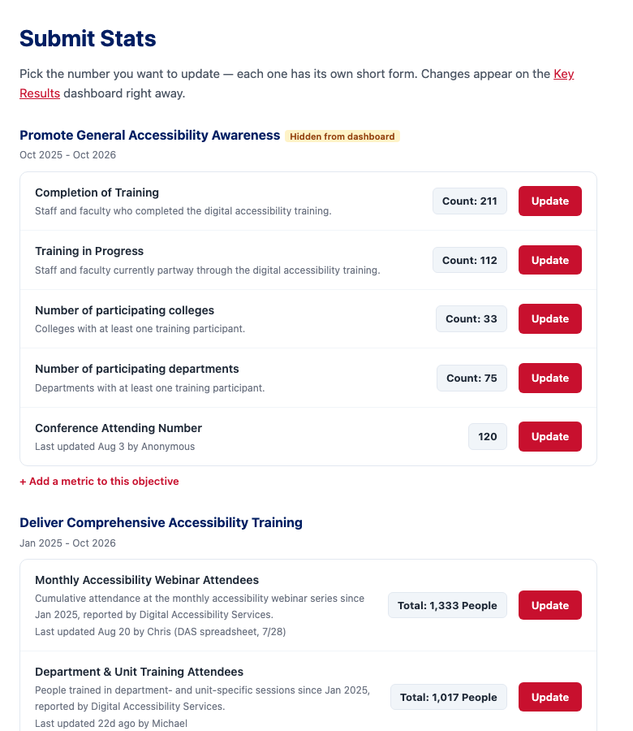
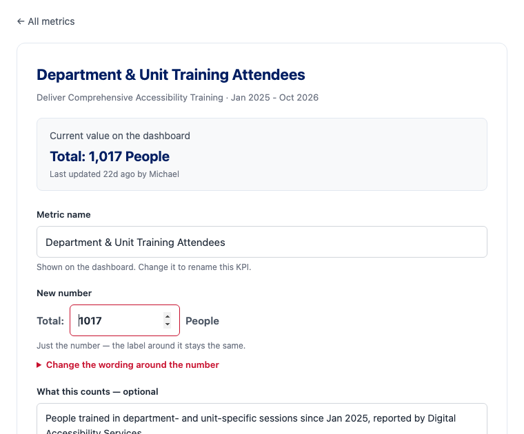
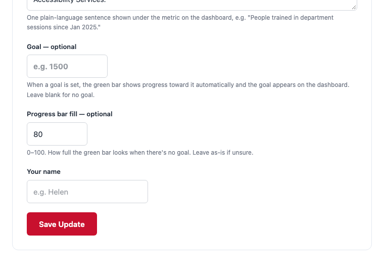
Metrics marked Auto-synced (Equalify scanning, users, Iris conversions, the ADA Title II card) get their value and definition from Equalify every 6 hours, so there's nothing to type in. You can still rename them or give them a goal: press Rename / goal on the row.
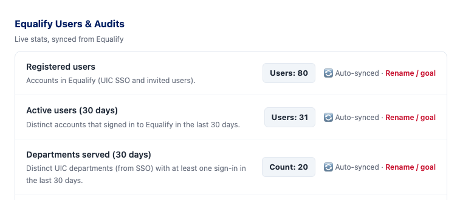
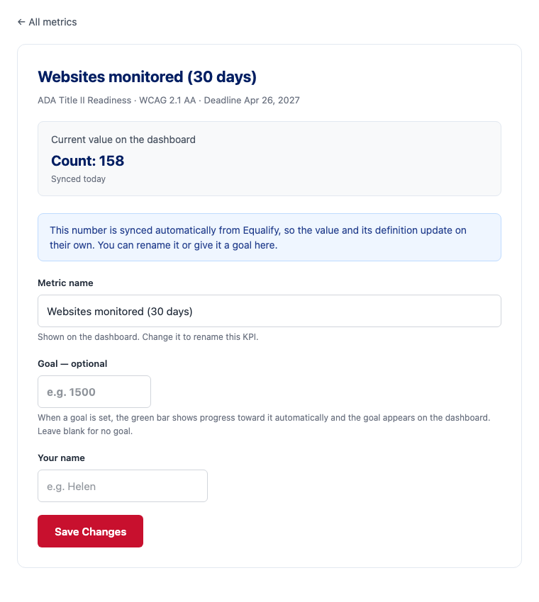
Every category on Submit Stats ends with + Add a metric to this objective. Use it when you start tracking something new.
Total: 47 People or Count: 12. Keep the pattern label: number unit; next time you'll only have to type the number.1500; the bar tracks progress toward it automatically.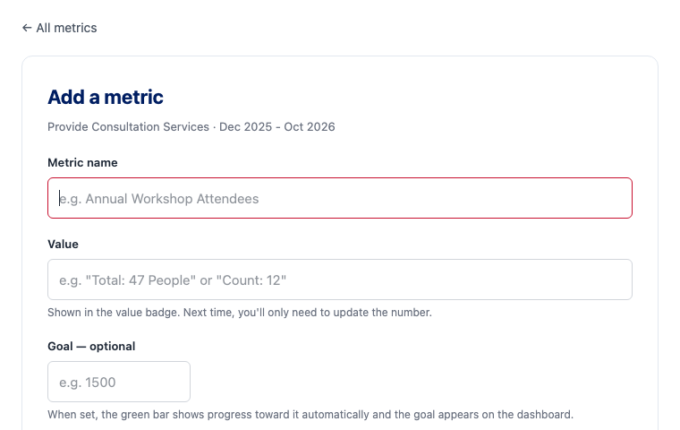
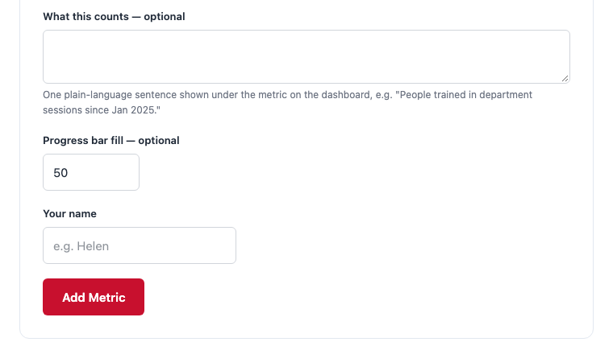
The Dashboard layout section of dase.uic.edu/admin lists every category (card) and its metrics.
Jan 2026 - {today}, see page 7).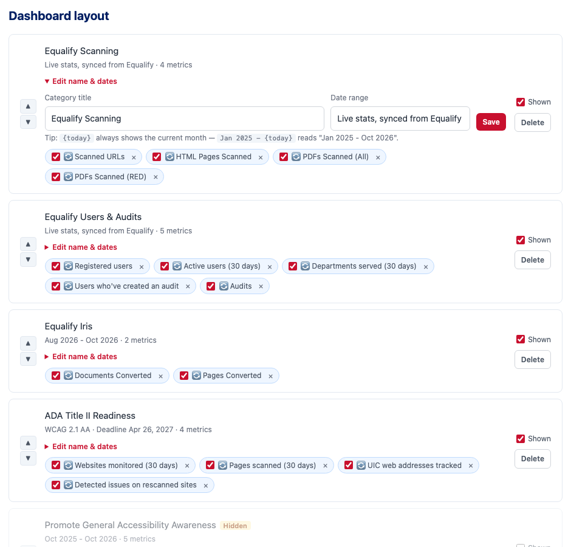
The line under each category title (for example Jan 2025 - Oct 2026) is the category's date range. Change it any time on the Admin page with Edit name & dates. It accepts the token {today}, which always shows the current month — so Jan 2025 - {today} reads "Jan 2025 - Oct 2026" now and updates itself every month. Use a fixed range (Feb 2026 - June 2026) for a project with an end date.
Give any metric a Goal on its Update form (or on Rename / goal for auto-synced ones). Once a goal is set:
Four cards are fed by integrations rather than by hand: Equalify Scanning, Equalify Users & Audits, Equalify Iris, and ADA Title II Readiness. Each of their metrics shows Synced from Equalify (or Iris) and when it last refreshed.
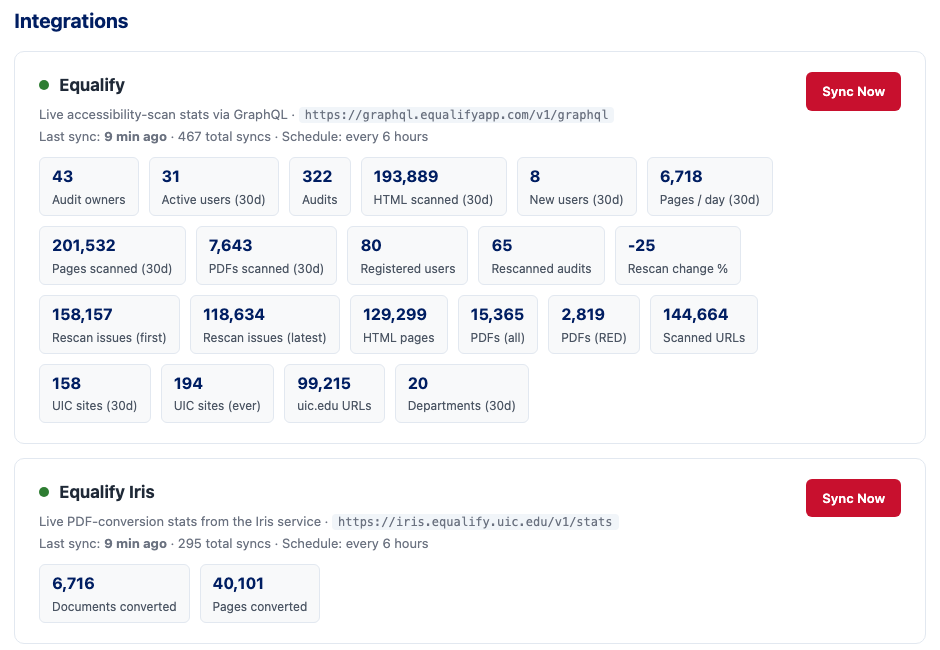